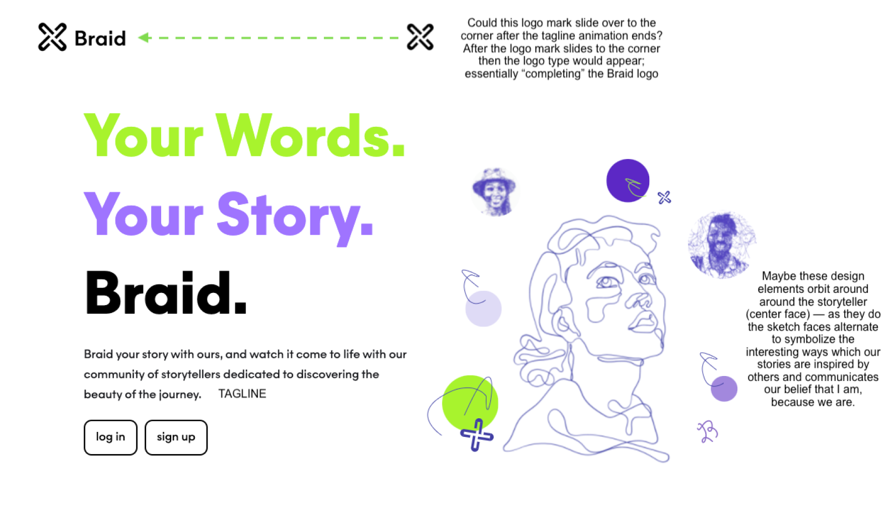
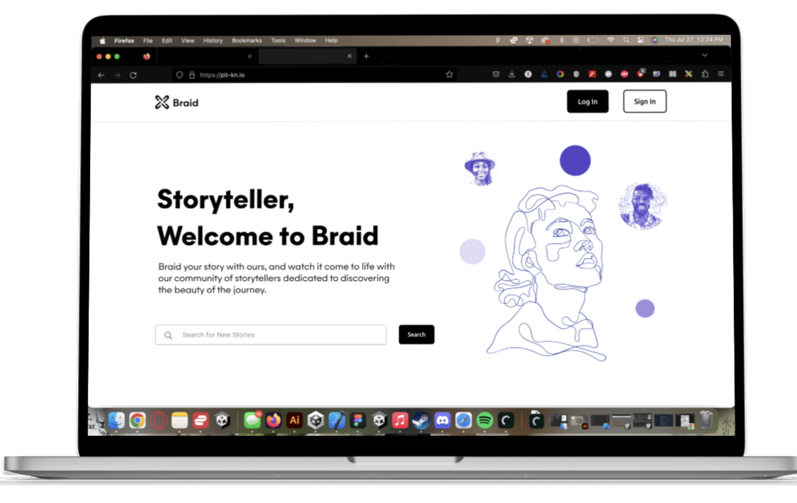
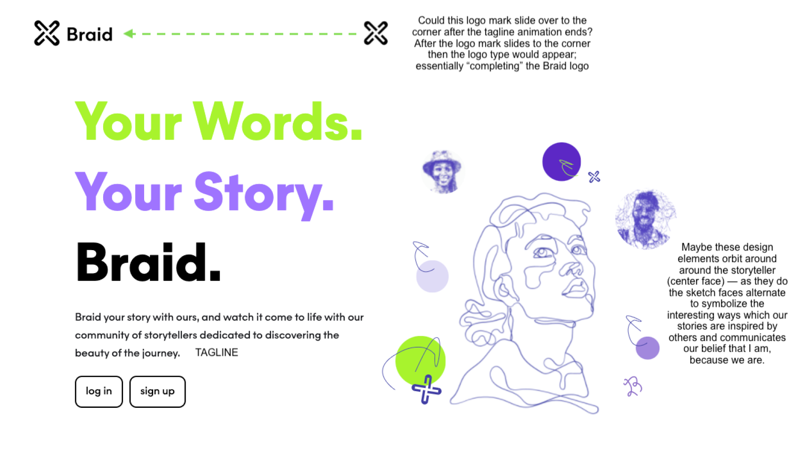
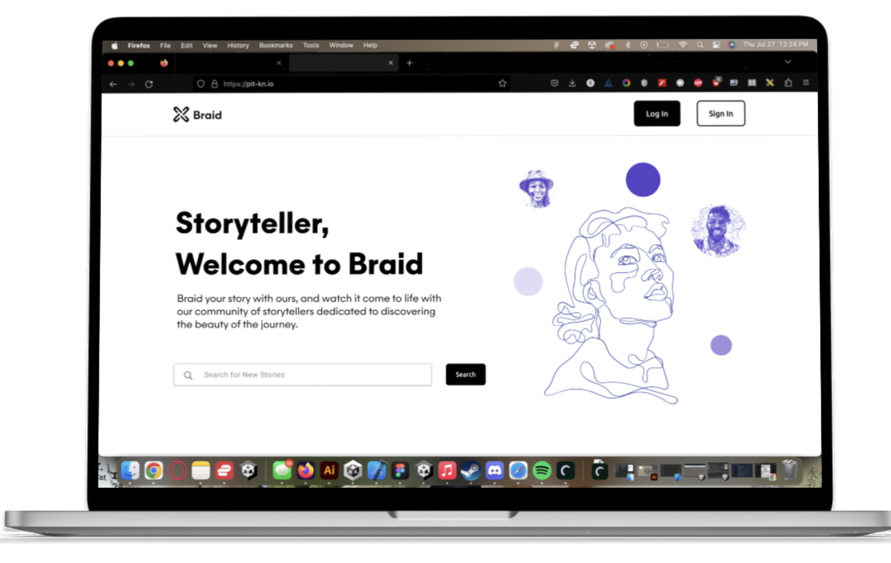

Café Adé
Café Adé
UX & UI Projects
Explore a curated collection of my best UX design projects, highlighting key design solutions and impactful results.
Braid Platform Design
Product Design | UX Research | 40% Increase in User Sign-ups
Developer Focused Design System
UX Design | UI Design
Target Case Study
UX Strategy | Gen Z Engagement
Threads Redesign
UX Research | Search Functionality Enhancement
 


